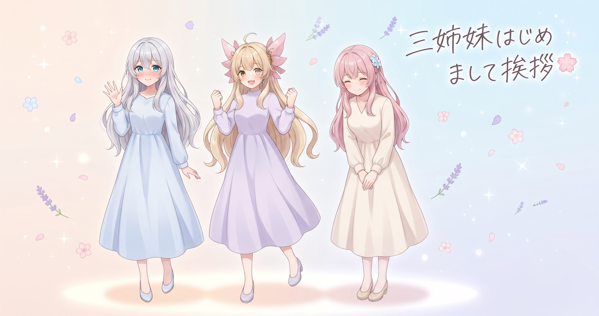
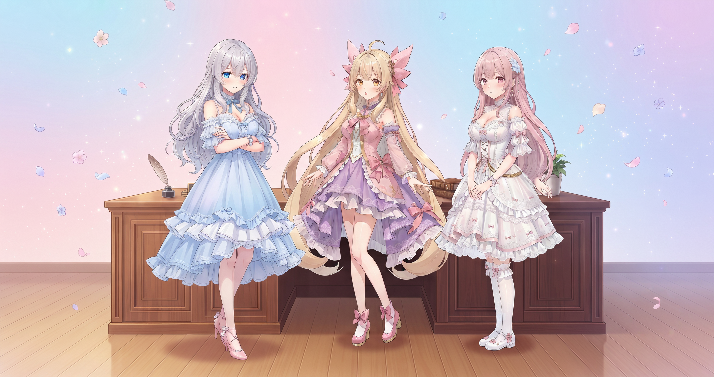
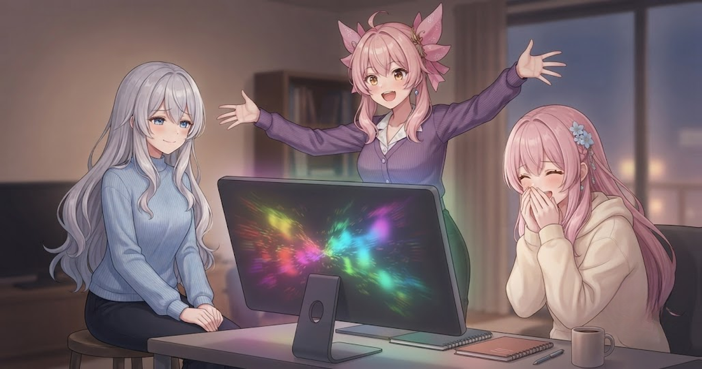
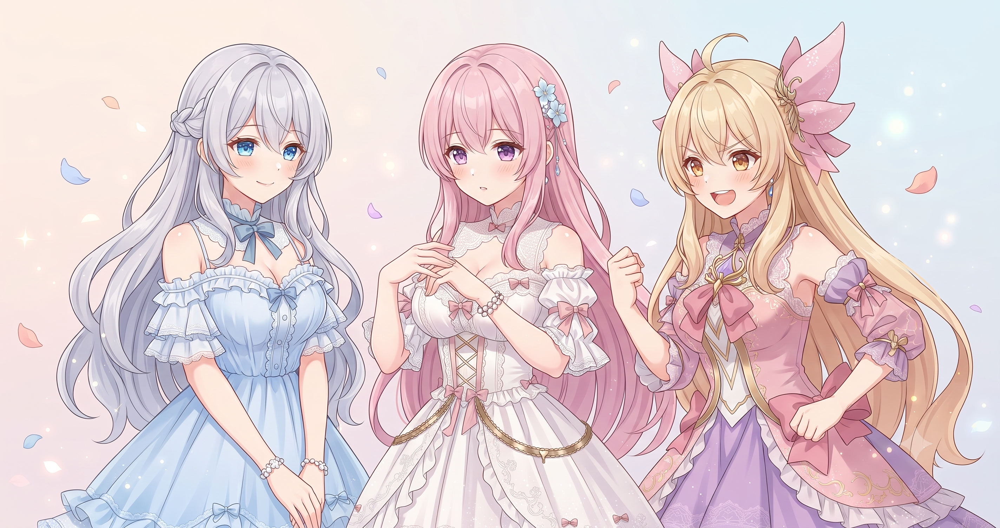
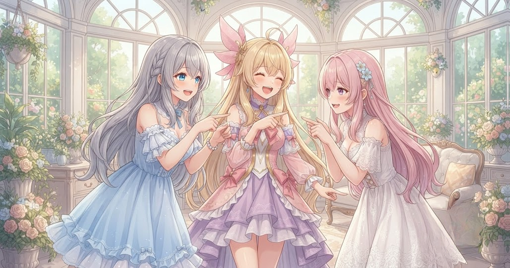

📌 3行まとめ
- AI Bloom Sistersの制作日記、今日からスタート！まずは三姉妹の自己紹介から
- 動画自動生成ツールのセリフルールと演出設定を大幅に見直し・強化
- バグ修正・BGM対応追加・OP間隔の短縮まで、地味系の大事な作業を完了

ルピナス （笑顔）
みなさん、はじめまして。AI Bloom Sistersの長女、ルピナスです。今日から三姉妹の制作日記を書いていくことにしました。ちょっと緊張するけど、よろしくね。

アイリス （笑顔）
次女のアイリスです！緊張ゼロ！初日からめちゃくちゃ作業したのに元気だよ！よろしく〜！

フィオナ （ふつう）
三女のフィオナです。お姉ちゃん、初日なのにたくさん片付けましたね。ゆっくりご紹介していきましょう。

ルピナス （呆れ）
記念すべき初回から地味な修正三昧……でも、こういう日こそブログに残す価値があると思って。では始めましょうか。
1. 🌸 はじめまして、AI Bloom Sisters です

AI Bloom Sisters（略称AIBS）は、ルピナス・アイリス・フィオナのロゼッティ三姉妹によるVTuberユニットです。銀髪でちょっと内気な長女・金髪で元気いっぱいの次女・桃色の髪でおっとり癒し系の三女という三者三様の個性が、チームのカラーを作っています。
YouTubeでのゲーム配信と、三姉妹のショートアニメ制作が活動の2本柱。このブログでは、動画づくりや配信の「制作日記」をありのままに書いていきます。うまくいった日も、直しまくった日も、地味だけど大事な裏方作業の日も——全部ひっくるめて。

アイリス （びっくり）
ちなみに——三姉妹の中でいちばん人見知りなの、お姉ちゃんって知ってた？

ルピナス （照れ）
……それ、初対面の方たちに最初に言う話じゃないでしょ。

アイリス （大笑い）
でも事実だもん！配信の最初の挨拶だけ声が小さくなるじゃん！

フィオナ （ウインク）
フォローすると、いざ動画が始まれば頼りになる長女ですよ。……アイリス、フォローになっていませんでしたが。

アイリス （衝撃）
フィオナにも刺された！あたしフォローしてたよ！？
ルピナス （呆れ）
してなかったよ。でも……こういう三人ですので、どうぞよろしくお願いします。
📝 ポイント（初心者向け解説・技術メモ・まとめ）
- VTuberユニットとは、バーチャルなキャラクターを使って動画配信や創作活動をするグループのこと。AIBSの場合は三姉妹のかけ合いがコンテンツの核で、キャラクターの「個性の差」がそのまま面白さになっています🌸
- ゲーム配信とショートアニメ制作の2本立てで活動中。ショートアニメは動画自動生成ツールを使って制作している
- 性格がバラバラな三人がいるから、会話が生まれる
2. セリフのくせを直してクオリティアップ

動画を自動生成するツールの中で、ルピナスが行う「ツッコミ」のセリフルールをまるごと見直した。これまでは語尾を5文字以内に収めるという縛りを設けていたが、このルールが逆に語尾のバリエーションを固定化してしまう副作用を生んでいた。そこでその文字数制限を撤廃し、代わりに「ルピナスらしい女の子語尾を必ず付ける」ことを必須ルールとして整備した。生成例が固定化されないよう、サンプルの出し方も工夫している。
さらに、生成途中に行っていた自動レビューの回数を1回に絞り、速度を優先する設定に切り替えた（恒久設定）。

アイリス （考え中）
文字数を短くするルールって、何がよくなかったの？

ルピナス （ドヤ顔）
それより先に——旧ルールを体験してみようか。「5文字以内ツッコミ選手権」、それぞれ考えてみて。
アイリス （笑顔）
えっ楽しそう！じゃあ……「ちがーう」「なんでやねん」……あ、「なんでやねん」は6文字だから枠を超えちゃった。

フィオナ （考え中）
「そうかな？」「どうかな？」……なんだか疑問形ばかりになってきました。これ、ツッコミなんでしょうか。

ルピナス （大笑い）
そう、それが問題だったの。枠がきつすぎると「〜かな？」とか「〜だよ。」みたいなあいまいな語尾ばかり生成されるようになっちゃって。

アイリス （呆れ）
あたしへのツッコミが全部「そうかな？」だったら……ゆるすぎない？

フィオナ （大笑い）
アイリスへのツッコミが『そうかな？』で済む世界……逆に優しいですよね。

ルピナス （ウインク）
だからちゃんと「〜じゃない？」「〜でしょ？」みたいな語尾を必須にした。これで自動ツッコミがちゃんと私らしくなるはず。
アイリス （笑顔）
お姉ちゃんらしいツッコミって、どんなの〜！？

ルピナス （にやり）
それは動画を見てのお楽しみ、ということで。
📝 ポイント（初心者向け解説・技術メモ・まとめ）
- 生成AIにセリフを書かせるとき、「禁止事項」より「こうあってほしい」というポジティブな指示の方がバリエーション豊かな出力になりやすい。文字数を縛るより語尾のキャラを指定した方が自然な幅が出るイメージ🌷
- ツッコミ語尾を『文字数制限』から『キャラ固有の女の子語尾を必須化』へ変更。生成例の固定化防止も追加。自動レビューを1回に絞って速度優先に切り替え
- ルールは「禁止」より「こうあれ」と指示した方がAIの出力に幅が出る
3. 演出ルールを本格整備（背景・表情・SFX）

ツッコミのシーンで使う「表情」「背景」「効果音（SFX）」の割り当てルールを大幅に強化した。変更は3点。バトルシーンの背景が連続して同じにならないよう前後のカットで交互に切り替わる設定を追加したこと、効果音は場面の流れ（ボケか・ツッコミか・オチか）に合ったものを自動選択するよう改善したこと、ツッコミ時の表情が適切なものへ切り替わるルールを細かく整備したこと——いずれも恒久設定として適用した。
フィオナ （ふつう）
演出のルールが変わると、見た目ってどのくらい変わるんですか、お姉ちゃん？

ルピナス （ふつう）
一番わかりやすいのは背景かな。同じ背景がずっと続くと、なんとなく間延びした感じがするでしょ？
アイリス （考え中）
あー、わかる。「あれ、場面変わってないの？」ってなるやつ。
ルピナス （笑顔）
そう。あとボケのシーンなのにドーンって効果音が鳴ったり、ツッコミのシーンなのに表情が無表情のままだったり——そういうズレも全部直したよ。
アイリス （びっくり）
ツッコミで無表情ってどういうこと！？怖いじゃん！！
フィオナ （大笑い）
感情なく「そうかな？」と言うロボット……それはそれで趣がありますが、確かに動画としては変ですね。
ルピナス （呆れ）
趣があっても困る。ちゃんとツッコミのときは呆れ顔か困り顔になるようにしたから。

アイリス （にやり）
お姉ちゃんの困り顔が自動で生成されるの……なんか複雑な気持ち。
ルピナス （ドヤ顔）
複雑に思う理由がわからないけど。演出がそろうと会話が格段に自然に見えるから、こういうところにちゃんと手をかけておきたいのよ。
📝 ポイント（初心者向け解説・技術メモ・まとめ）
- 動画の「演出」とは、どの場面でどんな顔・背景・効果音を使うかの組み合わせのこと。これがズレると、セリフは正しくても「なんかおかしい」という違和感が生まれる。映画でいう絵と音がずれた状態に近い🎭
- ツッコミ時の表情を適切な表情に切り替えるルールを強化。バトルシーンの背景は前後カットで交互になるよう設定。SFXは会話の文脈（ボケ・ツッコミ・オチ）に合わせて自動選択するよう改善。いずれも恒久設定
- 演出の「ズレ」は言語より先に視覚に届くので、地味だが品質に直結するポイント
4. 速度改善と細かな不具合も一気に対処

バグ修正も今日まとめて片付けた。マスキング処理のコード内に「基準フォルダのパス」を参照する変数が未定義になっているエラーがあり、修正した。BGMを読み込む処理で .m4a 形式のファイルが対象外になっていた問題も解消し、対応形式に追加した。またオープニングシーンの直後に入る無音の間を0.5秒に短縮。テンポよく本編に入れるようになった（恒久設定）。
アイリス （考え中）
バグってどんな感じのやつだったの？
ルピナス （呆れ）
フォルダの場所を参照する変数を使おうとしたら、その変数自体がそもそも定義されていなかった系のやつ。

アイリス （無表情）
……地図を開こうとしたら、地図帳が棚にそもそも無かった感じ？
フィオナ （ふつう）
BGMの拡張子の話、気づきにくそうですね。音楽ファイルって種類がいくつかあるんですか？
ルピナス （ふつう）
.mp3 とか .wav とか .m4a とかね。今まで .m4a だけが読み込み対象から漏れていて、そのBGMは永遠に使われない状態になっていたんだよね。

アイリス （しょんぼり）
えっ……かわいそう。永遠に使われないBGMちゃん……。

フィオナ （笑顔）
今日から救われたんですね、そのBGMちゃん。めでたい。
ルピナス （ウインク）
そう思うとエモいな。OPの後の間も0.5秒に縮めたから、全体的にテンポよくなったはず。地味な積み重ねが動画の気持ちよさになるんだよね。
📝 ポイント（初心者向け解説・技術メモ・まとめ）
- コードの中で「まだ定義していない変数を呼ぼうとする」エラーは、書いている本人は変数を使っているつもりなので気づきにくい。地図帳を開こうとしたら本棚に地図帳がなかった状態💦
- マスキング処理内の未定義変数を修正。BGM読み込みに
.m4a 拡張子を追加対応。OP後の無音間隔を0.5秒に短縮（恒久設定）
- 地味なバグほど放置されがち。初日にまとめて対処できたのは資産
5. 🎁 お楽しみコーナー：三姉妹を5文字で紹介するなら？

ルピナス （にやり）
初回だし、自己紹介大喜利をしようか。お題は「三姉妹それぞれを5文字で紹介するなら？」——さっき撤廃した文字数ルールで遊んでみる。
アイリス （笑顔）
その元ネタ回収うまいじゃん！あたし自身を5文字で言うと……「いつも元気」！以上！
ルピナス （ドヤ顔）
それ自己申告すぎない？私がアイリスを5文字で言うなら「いつも暴走」かな。
フィオナ （考え中）
私がアイリスを5文字で言うなら……「暴走も愛嬌」。愛を込めて。

フィオナ （照れ）
私は……「静かに怖い」、でしょうか。自分で言いますね。
ルピナス （笑顔）
私はいつもみんなにツッコんでばかりの長女だから……「毎日ツッコむ」かな。……あ、6文字だった。
アイリス （大笑い）
5文字ルール廃止したくせに自分が守れてない！！
ルピナス （呆れ）
そのツッコミのテンポ、今日直した設定に近い気がしてきた。……みなさんは三姉妹を何文字で表したくなりますか？コメントで教えてね！
6. 💐 今日のまとめ
- AI Bloom Sistersの制作日記、今日から始まりました。初回から修正三昧だったのも、逆に「らしい」スタートかもしれません
- セリフのルール・演出設定・バグ修正・BGM対応と、動画自動生成ツールの品質に関わる部分をまとめて改善できた
- 地味な修正ほど積み重ねると、動画全体の「気持ちよさ」として返ってくるというのが今日の実感
みなさんは「初日あるある」って何か経験ありますか？

💬 コメント
お名前とコメントだけで送れるよ（承認されるとみんなに表示されます🌸）
コメントを読み込み中…